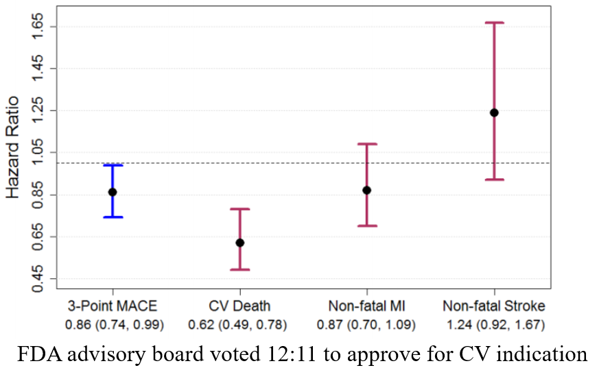
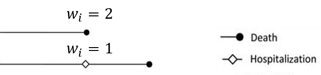
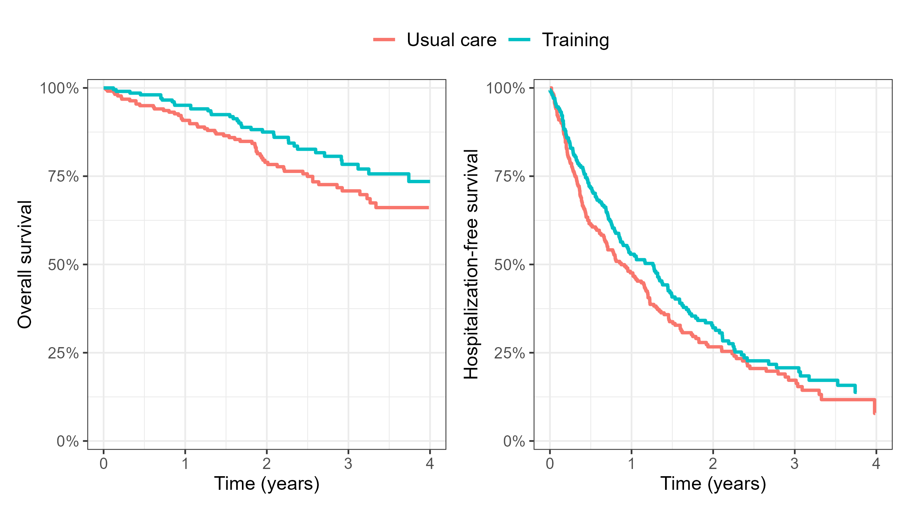
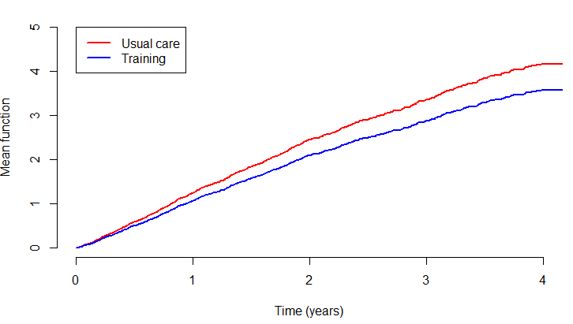
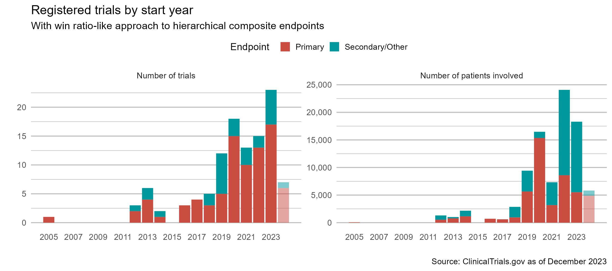

Statistical Methods for Composite Endpoints: Win Ratio and Beyond
Chapter 1. Introduction
Department of Biostatistics & Medical Informatics
University of Wisconsin-Madison
Aug 3, 2024
Outline
- Examples and regulatory guidelines
- Traditional methods
- Time to first event
- Weighted total events (
Wcompopackage)
- Win ratio and hierarchical endpoints
- The estimand issue
\[\newcommand{\d}{{\rm d}}\] \[\newcommand{\T}{{\rm T}}\] \[\newcommand{\dd}{{\rm d}}\] \[\newcommand{\cc}{{\rm c}}\] \[\newcommand{\pr}{{\rm pr}}\] \[\newcommand{\var}{{\rm var}}\] \[\newcommand{\se}{{\rm se}}\] \[\newcommand{\indep}{\perp \!\!\! \perp}\] \[\newcommand{\Pn}{n^{-1}\sum_{i=1}^n}\] \[ \newcommand\mymathop[1]{\mathop{\operatorname{#1}}} \] \[ \newcommand{\Ut}{{n \choose 2}^{-1}\sum_{i<j}\sum} \] \[ \def\a{{(a)}} \def\b{{(1-a)}} \def\t{{(1)}} \def\c{{(0)}} \def\d{{\rm d}} \def\T{{\rm T}} \]
Example and Guidelines
Motivating Example: Colon Cancer
- Landmark colon cancer trial
- Population: 619 patients with stage C disease (Moertel et al., 1990)
- Arms: Levamisole + fluorouracil (\(n=304\)) vs control (\(n=315\))
- Endpoint: relapse-free survival (log-rank test p<0.001)
- Death = Relapse
- 258 deaths (89%) after relapse ignored

Motivating Example: HF-ACTION
- A cardiovascular trial (HF-ACTION)
- Subpopulation: 426 heart failure patients (O’Connor et al., 2009)
- Arms: Exercise training + usual care (\(n=205\)) vs usual care (\(n=221\))
- Endpoint: hospitalization-free survival (log-rank test p=0.100)
- Death = Hospitalization
- 82 (88%) deaths + 707 (69%) recurrent hospitalizations ignored
Composite Endpoints
- Traditional composite endpoint (TCE)
- Time to first event
- Relapse/Progression-free survival
- First major adverse cardiac event (MACE): death, heart failure, myocardio-infarction, stroke (event-free survival)
- Limitations
- Lack of clinical priority
- Statistical inefficiency (waste of data)
- Time to first event
- Hierarchical composite endpoint (HCE)
- Example: Death > nonfatal MACE > six-minute walk test (6MWT)/NYHA class
Why Composite
Advantages
More events \(\to\) higher power \(\to\) smaller sample size/lower costs
No need for multiplicity adjustment
A unified measure of treatment effect
ICH-E9 “Statistical Principles for Clinical Trials” (ICH, 1998)
- “There should generally be only one primary variable”
- “If a single primary variable cannot be selected …, another useful strategy is to integrate or combine the multiple measurements into a single or composite variable …”
- “[composite endpoint] addresses the multiplicity problem without adjustment to the type I error”
Regulatory Guidelines: FDA
Main points
- Typically first event but can do total events
- Component-wise analysis important for interpretation
FDA Guidance for Industry: “Multiple Endpoints in Clinical Trials” (FDA, 2022)
- “Composite endpoints are often assessed as the time to first occurrence of any one of the components, …, it also may be possible to analyze total endpoint events”
- “The treatment effect on the composite rate can be interpreted as characterizing the overall clinical effect when the individual events all have reasonably similar clinical importance”
- “…analyses of the components of the composite endpoint are important and can influence interpretation of the overall study results”
Regulatory Guidelines: Europe
Main points
- Combine events of similar importance
- Include mortality as a component
European Network for Health Technology Assessment “Endpoints used for Relative Effectiveness Assessment – Composite Endpoints” (EUnetHTA, 2015)
- “All components of a composite endpoint should be separately defined as secondary endpoints and reported with the results of the primary analysis”
- “Components of similar clinical importance and sensitivity to intervention should preferably be combined”
- “If adequate, mortality should however be included if it is likely to have a censoring effect on the observation of other components”
A Tricky Example
- The EMPA-REG Trial (NCT01131676)
- Population: 7,020 patients with type 2 diabetes (Zinman et al., 2015)
- Treatment arms: Empagliflozin vs control
- Endpoint: Time to first CV death, nonfatal MI, nonfatal stroke

Traditional Composites
Data and Notation
- Full data \(\mathcal H^*(\infty)\)
- \(D\): survival time; \(N^*_D(t)=I(D\leq t)\)
- \(N^*_1(t), \ldots, N^*_K(t)\): counting processes for \(K\) nonfatal event types
- Cumulative data: \(\mathcal H^*(t)=\{N^*_D(u), N^*_1(u), \ldots, N^*_K(u):0\leq u\leq t\}\)
- Observed (censored) data \(\{\mathcal H^*(X), X\}\)
- \(\mathcal H^*(X)\): outcomes up to time \(X\)
- \(X=D\wedge C\): length of follow-up (\(a\wedge b = \min(a, b)\))
- \(C\): independent censoring time
- Goal: estimate/test features of \(\mathcal H^*(\infty)\) using \(\{\mathcal H^*(X), X\}\)
First Event
- Univariate endpoint
\(N^*_{\rm TFE}(t) = I\{N^*_D(t)+\sum_{k=1}^KN^*_k(t)\geq 1\}\)
- \(I(\cdot)\): 0-1 indicator
\(\tilde T\): time to first event
- Kaplan–Meier curve, log-rank test, Cox model
- Component-wise weighting
- Upweight death over nonfatal events
- E.g., Death = 2 \(\times\) hospitalization
- Upweight death over nonfatal events

Total Events
- Weighted composite event process
- \(N^*_{\rm R}(t)=w_DN^*_D(t)+\sum_{k=1}^Kw_kN^*_k(t)\)
- \(w_D, w_1, \ldots, w_K\): weights to death and nonfatal events

- \(w_D, w_1, \ldots, w_K\): weights to death and nonfatal events
- Proportional means model (Mao & Lin, 2016) \[
E\{N^*_{\rm R}(t)\mid Z\} = \exp(\beta^\T Z)\mu_0(t)
\]
- \(\exp(\beta)\): mean ratio of weighted total events comparing treatment \((Z=1)\) vs control \((Z=0)\)
- R-package:
Wcompo
- \(N^*_{\rm R}(t)=w_DN^*_D(t)+\sum_{k=1}^Kw_kN^*_k(t)\)

Software: Wcompo::CompoML()
- Basic syntax
id: unique patient identifier;time: event times;status: event types (1: death;2,...,Knonfatal event types;Z: covariate matrix)w: \(K\)-vector of weights to event types1(death),2,...,K(nonfatal events); default is unweighted
- Output: a list of class
CompoMLobj$beta: \(\hat\beta\);obj$var: \(\hat\var(\hat\beta)\)plot(obj, z): plot mean function \(\exp(\hat\beta^{\rm T} z)\hat\mu_0(t)\)
HF-ACTION: An Example
- High-risk subgroup (n=426)
- Baseline cardiopulmonary exercise (CPX) test \(\leq\) 9 min
| Usual care (N = 221) | Exercise training (N = 205) | ||
|---|---|---|---|
| Age | ≤ 60 years | 122 (55.2%) | 128 (62.4%) |
| > 60 years | 99 (44.8%) | 77 (37.6%) | |
| Follow-up | (months) | 28.6 (18.4, 39.3) | 27.6 (19, 40.2) |
| Death | 57 (25.8%) | 36 (17.6%) | |
| Hospitalizations | 0 | 51 (23.1%) | 60 (29.3%) |
| 1-3 | 114 (51.6%) | 102 (49.8%) | |
| 4-10 | 49 (22.2%) | 39 (19%) | |
| >10 | 7 (3.2%) | 4 (2%) |
HF-ACTION: Preparation
- Load packages and data
library(survival)
# install.packages("Wcompo")
library(Wcompo) # for weighted total events
library(rmt) # for hfaction data
library(tidyverse) # for data wrangling
# load data
data(hfaction)
head(hfaction) # trt_ab=1: training; 0: usual care
#> patid time status trt_ab age60
#> 1 HFACT00001 0.60506502 1 0 1
#> 2 HFACT00001 1.04859685 0 0 1
#> 3 HFACT00002 0.06297057 1 0 1
#> 4 HFACT00002 0.35865845 1 0 1
#> 5 HFACT00002 0.39698836 1 0 1
#> 6 HFACT00002 3.83299110 0 0 1HF-ACTION: Data
- Data processing
HF-ACTION: Mortality
- Cox model for death
- HR: \(\exp(-0.3973) = 67.2\%\) (\(32.8\%\) reduction in risk)
- \(P\)-value: 0.0621 (borderline significant)
## get mortality data
hfaction_D <- hfaction |>
filter(status != 2) # remove hospitalization records
## Cox model for death against trt_ab
obj_D <- coxph(Surv(time, status) ~ trt_ab, data = hfaction_D)
summary(obj_D)
#> n= 426, number of events= 93
#> coef exp(coef) se(coef) z p
#> trt_ab -0.3973 0.6721 0.2129 -1.866 0.0621HF-ACTION: TFE
- Cox model for hospitalization-free survival
- HR: \(\exp(-0.1770) = 83.8\%\) (\(16.2\%\) reduction in risk)
- \(P\)-value: 0.111 (less significant than death)
HF-ACTION: Death vs TFE
- Hospitalizations dilute effect on death …
- An EMPA-REG-like situation 
HF-ACTION: Weighted Total
Proportional means model (death = \(2\times\) hosp)
- MR: \(\exp(-0.15398) = 85.7\%\) (\(14.3\%\) reduction in total number of composite events)
- \(P\)-value: 0.170 (less significant than TFE)
- Limitation: Survival \(\uparrow\) \(\to\) cumulative total \(\uparrow\) \(\to\) attenuated effect
HF-ACTION: Cumulative means
- Model-based mean functions

Lessons Learned
- Adding nonfatal events \(\neq\) higher power
- Component may be less discriminating (Freemantle et al., 2003)
- Length of exposure (death as competing risk) (Schmidli et al., 2023)
- Solutions
- Hierarchically prioritize death
- Evaluate nonfatal components only on survivors
- Quantitative weighting \(\to\) adjust for survival time
- Loss rate = cumulative total / length of exposure (Ch 3)
- Hierarchically prioritize death
Hierarchical Composites
Win Ratio: Basics
- A common approach to HCE
- Proposed and popularized by Pocock et al. (2012)
- Treatment vs control: generalized pairwise comparisons
- Win-loss: sequential comparison on components
- Longer survival > fewer/later nonfatal MACE > better 6MWT/NYHA score
- Effect size: WR \(=\) wins / losses
- Alternative metrics
- Proportion in favor (net benefit): PIF \(=\) wins \(-\) losses (Buyse, 2010)
- Win odds: WO \(=\) (wins \(+\) \(2^{-1}\)ties) / (losses \(+\) \(2^{-1}\)ties) (Brunner et al., 2021; Dong et al., 2020)
Win Ratio: Gaining Popularity
- More trials are using it…

An Important Caveat
WR’s estimand depends on censoring …
What is an estimand?
- Population-level quantity to be estimated
- Population-mean difference, (true) risk ratio, etc.
- Specifies how treatment effect is measured
- ICH E9 (R1) addendum: estimand construction one of the “central questions for drug development and licensing” (ICH, 2020)
- Population-level quantity to be estimated
Win-Loss Changes with Time
- Illustration
- Win-loss status, and deciding component, changes with time

- Longer follow-up …
- Parameters: win/loss proportions \(\uparrow\) (WR uncertain); tie proportion \(\downarrow\)
- Component contributions: prioritized \(\uparrow\); deprioritized \(\downarrow\)
- Win-loss status, and deciding component, changes with time

Trial-Dependent Estimand
- Actual estimand
- Average WR mixing shorter-term with longer-term comparisons
- Weight set (haphazardly) by censoring distribution
- Staggered entry, random withdrawal \(\to\) non-scientific
- Testing vs estimation
Conclusion
Notes
- More on
- Regulatory guidelines for composite endpoints (Mao & Kim, 2021)
- ICH E9 (R1) implementation (Akacha et al., 2017; Ionan et al., 2022; Qu & Lipkovich, 2021; Ratitch et al., 2020)
- Practical guidance on win ratio (Redfors et al., 2020)
- Defining estimand for win ratio (Mao, 2024)
- Generalized pairwise comparisons (Deltuvaite-Thomas et al., 2022; Dong et al., 2022; Péron et al., 2016; Verbeeck et al., 2023)
- Cumulative total events
- Based on cumulative incidence/frequency under competing risks (Fine & Gray, 1999; Ghosh & Lin, 2000; Gray, 1988)
Summary
- Composite endpoints
- Death + hospitalization/progression/relapse
- Regulatory recommendation
- Traditional
- Time to first: death = nonfatal (
survival::coxph()) - Weighted total: death = \(w_D\times\) nonfatal (
Wcompo::compoML())
- Time to first: death = nonfatal (
- Hierarchical
- Win ratio, net benifit, win odds: death > nonfatal
- Estimand issue - ICH E9 (R1)